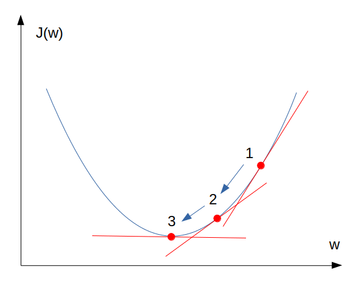
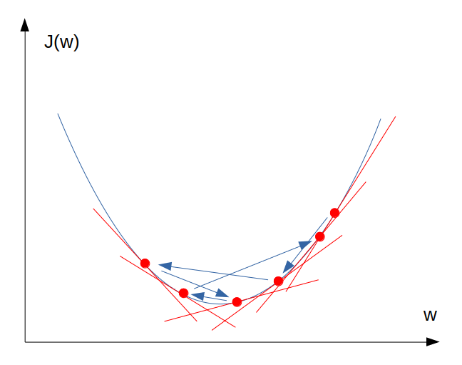

โดย ชิตพงษ์ กิตตินราดร | ธันวาคม 2562
วิธีที่ดีที่สุดในการทำความเข้าใจ Machine learning คือการอธิบายพร้อมกับตัวอย่าง โดยเราจะเริ่มที่ Algorithm ที่ง่ายที่สุด นั่นคือ Linear regression
เราจะใช้ข้อมูลตัวอย่างจาก Kaggle ซึ่งแสดงความสัมพันธ์ระหว่างตัวแปร x บนแกนนอนกับตัวแปร y บนแกนตั้ง ถ้ามองด้วยตาเราจะเห็นว่า x กับ y มีความสัมพันธ์ที่เรียกว่า Positive correlation อย่างชัดเจน นั่นคือยิ่ง x มีค่ามาก y ก็มีค่ามากตามไปด้วย เราจะเห็นความสัมพันธ์ลักษณะในโลกจริงได้มากมาย ตัวอย่างเช่น ยิ่งจำนวนรถมาก เวลาที่ใช้บนถนนต่อการเดินทางหนึ่งเที่ยวก็มีแนวโน้มจะมากขึ้นด้วย
ปัจจุบัน ชุดข้อมูลนี้มีค่า x และ y จำนวน 999 คู่ ตัวอย่างเช่น คู่แรก x = 24, y = 21.54 ส่วนคู่ที่สอง x = 50, y = 47.46 เราเรียกข้อมูลแต่ละคู่เช่นนี้ว่าข้อมูลหนึ่งรายการ
จริงอยู่ที่เรามีข้อมูลถึง 999 รายการ แต่ถ้าเราเก็บข้อมูลมาใหม่เป็นรายการที่ 1000 โดยข้อมูลรายการนี้รู้แค่ค่า x เราจะรู้ได้อย่างไรว่าค่า y เป็นเท่าไร
ตัวอย่างเช่น ถ้าข้อมูลใหม่มี x = 22 เราอาจจะลองลากเส้นแนวดิ่งจากแกน x ที่ 22 แล้วไปบรรจบตั้งฉากกับแกน y ซึ่งดูเหมือนจะได้ประมาณ 20 แต่ช้าก่อน มันอาจจะเป็น 18, 25 หรือแม้กระทั่ง 30 ก็ได้ เพราะข้อมูลตัวอย่างของเรามีรายการที่ x มีค่าประมาณ 22 อยู่หลายรายการ ซึ่งแต่ละรายการก็มีค่า y ไม่เท่ากันเลย
Machine learning จึงมาช่วยเราได้ โดยการใช้ Algorithm ซึ่งก็คือสูตรและกลไกทางคณิตศาสตร์ มาเรียนรู้ข้อมูลที่เรามี เพื่อสร้างโมเดลของข้อมูลขึ้นมา เราจะใช้โมเดลที่สร้างขึ้นนี้ ในการพยากรณ์คำตอบ ซึ่งก็คือค่า y ที่เราต้องการ
ซึ่งในกรณีนี้ โมเดลที่ได้คือ:
ดังนั้นถ้าเราลองใส่ค่า x = 22 ลงไป จะได้ y = 21.90
คำถามคือ โมเดลนี้ได้มาอย่างไร คำตอบอยู่ในส่วนต่อไป
หัวใจของโมเดลพยากรณ์ คือฟังก์ชันคณิตศาสตร์ที่เป็นตัวแทนความสัมพันธ์ระหว่างตัวแปร x กับคำตอบ y เราเรียกฟังก์ชันนี้ว่า Hypothesis function ซึ่งหมายถึงฟังก์ชันที่เป็น "สมมุติฐาน" ว่าข้อมูลมีความสัมพันธ์กันอย่างไรนั่นเอง โดยในปัญหา Linear regression นั้น Hypothesis function จะอยู่ในรูปแบบ:
ฟังก์ชันนี้อยู่ในรูปแบบสมการเส้นตรง นั่นคือค่า x ที่ใส่ลงไป จะมีความสัมพันธ์กับค่า y แบบที่ลากเป็นเส้นตรงได้
หน้าที่ของ Machine learning คือการหาตัวแปร w และ b ซึ่งจะประกอบกันเป็น Hypothesis function ที่มีความคลาดเคลื่อนน้อยที่สุดเมื่อเทียบกับข้อมูลที่เรามี ซึ่งในกรณีตัวอย่างนี้ เราได้ w = 1.00065638 และ b = -0.10726546
เรารู้ได้อย่างไรว่า w และ b ต้องมีค่าเท่าใดจึงจะทำให้โมเดลมีความคลาดเคลื่อนน้อยที่สุด คำตอบมีอยู่ 2 ส่วน ส่วนแรกคือเราต้องมีวิธีการวัดความคลาดเคลื่อน ซึ่งเรียกว่า Cost function ส่วนที่สองคือเราต้องมีวิธีการหาค่า w และ b ที่จะทำให้ค่าความคลาดเคลื่อนใน Cost function นั้นต่ำที่สุด เรียกกระบวนการนี้ว่า Gradient descent
สำหรับ Hypothesis function แต่ละฟังก์ชัน จะมี Cost function คู่อยู่เสมอ ซึ่งทำหน้าที่วัดว่าค่า y ที่พยากรณ์ได้จาก Hypothesis function มีความคลาดเคลื่อนกับค่า y ที่เรามีข้อมูลอยู่จริงเท่าใด โดยสำหรับ Linear regression เราใช้ฟังก์ชันต่อไปนี้เป็น Cost function:
อนึ่ง ฟังก์ชันนี้ มีชื่อเรียกเฉพาะตัว ว่า Mean Squared Error หรือ MSE
เป้าหมายของ Algorithm คือการทำให้ มีค่าต่ำที่สุดเท่าที่จะเป็นไปได้ เราเรียกจุดนี้ว่า Global minimum ซึ่งหาได้โดยใช้กระบวนการที่เรียกว่า Gradient descent
ทบทวนอีกครั้งว่าเรามี Cost function ที่กำหนดความสัมพันธ์ระหว่างตัวแปร w, b กับความคลาดเคลื่อนของโมเดล ในโมเดลที่ข้อมูลมีมิติเดียว (คือมี x เพียงหนึ่งตัวสำหรับข้อมูลแต่ละรายการ แต่ละ x ก็มี w เพียงตัวเดียวเป็นค่าน้ำหนัก) รูปร่างของ Cost function จะมีลักษณะเป็นเหมือนชาม คือมีจุดต่ำที่สุด ซึ่งจุดนั้นเป็นจุดที่เราต้องการเนื่องจากจะทำให้ได้ค่าความคลาดเคลื่อนที่ต่ำที่สุด หน้าที่ของ Gradient descent คือการหาตัวแปร w และ b ที่จะทำให้ได้ J ที่ต่ำที่สุด

ในที่นี้เราจะพิจารณาเฉพาะ Cost function ของ ซึ่งผันแปรตามตัวแปร w เพียงตัวเดียวก่อน
การทำงานของ Gradient descent ใช้ประโยชน์จากข้อเท็จจริงที่ว่า ในแต่ละจุดของเส้นฟังก์ชัน เราจะสามารถลากเส้นไปแตะเพื่อชี้วัด "ความชัน" ของจุดนั้นๆ ได้ จากภาพเราจะเห็นว่าจุดที่ 1 มีความชันมากกว่าจุดที่ 2 และจุดที่ 2 ก็ชันมากกว่าจุดที่ 3 จากคุณสมบัตินี้ หากเรามีกลไกที่จะหาจุดที่มีความชันน้อยลงเรื่อยๆ ไปจนถึงจุดที่แทบไม่มีความชันเลย (จุดที่ 3) เราก็จะได้ Global minimum ที่เราต้องการ
การหาความชันทำได้ด้วยวิชา Calculus โดยการหาอนุพันธ์ (Derivative) ของฟังก์ชัน เมื่อเปรียบเทียบกับ w ซึ่งแทนเป็นสัญลักษณ์ได้ด้วย:
จากวิชา Calculus เราหาอนุพันธ์ของฟังก์ชันดังกล่าว จะได้ Algorithm ทั่วไปคือ:
ทำซ้ำจนกระทั่งผลลัพธ์ล่าสุดไม่เปลี่ยนแปลงจากผลลัพธ์ครั้งก่อน:
จาก Algorithm ทั่วไปนี้ นำมาประยุกต์กับ Linear regression จะได้ว่า:
ทำซ้ำจนกระทั่งผลลัพธ์ล่าสุดไม่เปลี่ยนแปลงจากผลลัพธ์ครั้งก่อน:
มาลองทำความเข้าใจ Algorithm นี้ด้วยตัวอย่าง สมมุติว่าเราเริ่มคำนวนด้วยค่าตั้งต้นดังนี้: ; ถ้าเราหาอนุพันธ์ครั้งแรกได้ 1 ครั้งที่สองได้ 0.7 และครั้งที่สามได้ 0.4 เราจะได้:
จะเห็นว่า ผลลัพธ์ค่า b ที่ได้มาค่าน้อยลงเรื่อยๆ คือจาก 1.5 เป็น 1.15 เป็น 0.95 โดยผลลัพธ์ที่ได้แต่ละรอบจะส่งผลให้ความชันของ Cost function ลดลงเรื่องๆ ทำให้อนุพันธ์น้อยลงเรื่อยๆ จาก 1 เป็น 0.7 เป็น 0.4 เป็นต้น
เป้าหมายของกระบวนการ Gradient descent นี้คือการหาค่าตัวแปรของโมเดลที่ทำให้โมเดลมีผลลัพธ์ y ที่คลาดเคลื่อนกับค่า y ที่แท้จริงให้น้อยที่สุด นั่นคือเราจะได้โมเดลที่เป็นตัวแทนของชุดข้อมูลนี้ได้ดีที่สุดนั่นเอง
ถ้าสังเกตดีๆ จะเห็นว่า เราสามารถควบคุมกระบวนการนี้ได้ด้วยการกำหนดตัวแปรสองสิ่ง เราเรียกตัวแปรที่เราเป็นผู้กำหนดเองนี้ว่า Hyperparameter ซึ่งในกรณีนี้ ประกอบด้วย:
ทีนี้ดูเหมือนกับว่า ถ้าเรากำหนด Learning rate สูงๆ ก็จะทำให้ได้ค่า Global minimum ของ Cost function เร็วขึ้น อย่างไรก็ตามถ้าค่า Learning rate สูงเกินไป อาจจะทำให้โมเดลหา Global minimum ไม่เจอ เพราะในขั้นท้ายๆ ของ Gradient descent ตัวแปรอาจจะกระโดดเลยจุดต่ำสุดของ J ไปอีกด้านหนึ่ง เพื่อความเข้าใจลองดูภาพประกอบ:

นอกจากวิธี Gradient descent แล้ว เรายังมีวิธีการหา Parameter ที่ให้ Cost ที่ต่ำที่สุดอีกวิธี เราเรียกวิธีนี้ว่า Normal equation โดยเพียงใช้สมการ:
Normal equation ทำงานได้ดีและเร็วเมื่อจำนวน Feature ไม่มาก ผู้สนใจสามารถหาอ่านวิธีการ Derive ให้ได้มาซึ่ง Normal equation นี้ด้วยตนเอง
ตอนนี้เรามีความรู้และเข้าใจขั้นตอนการสร้างโมเดล Linear regression แล้ว ตอนถัดไปเราจะใช้ตัวอย่างนี้มาสร้างโมเดลจริงกัน
หน้าแรก | บทที่ 1 บทนำ | บทที่ 3 Linear Regression Programming